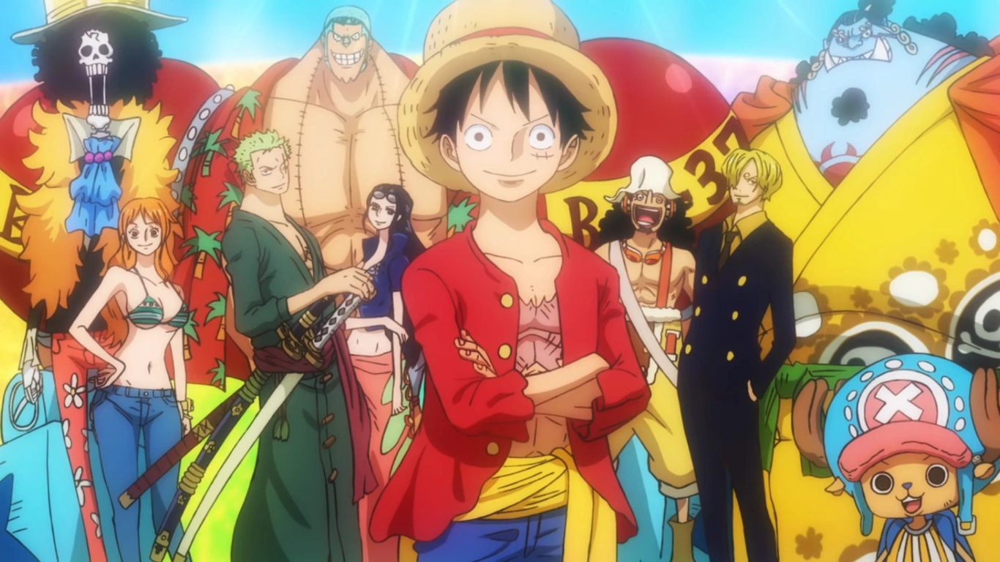

The Crew
The Straw Hats consist of 9 crew members, each with their own specialty, as listed on the Home page. Luffy is the Captain of the crew he's a boy who ate a devil fruit to gain a power which made him rubber, Zoro was recruited 2nd by Luffy after being saved from execution being the crew's first swordsman, Nami was 3rd in line after being saved from an antogonist that forced her to draw maps, she became Luffy's Navigator, right after Nami joined they ran into Usopp who joined after impressing Luffy with bluffs and his sharpshooting skills. Sanji was the 5th to join the crew after being convinced to travel with Luffy to find his dream, becoming the cook of Luffy's crew. Chopper who ate a fruit to give him human like forms as a reindeer joined Luffy's crew as the 6th member since he saw Luffy's crew had no doctor and was interested in finding every cure for every disease. Robin is the 7th crew member after being fought and defeated as the previous boss didn't provide the artifacts she was looking for and had faith in Luffy to bring her to them as he travels the world, her fruit being useful for support and attacking, she became the archeologist of the group, the 8th and second to last to join in the anime is Franky, he was reluctant to join like Zoro was, after making his dream ship in which he was going to sail on for his dream, he ended up joining after his brother convinced him to do so. The last one for now to join his crew is a skeleton who died of poisoning and revived himself from a fruit he ate, he joined Luffy's crew in hopes to find an old friend while traveling with Luffy.
